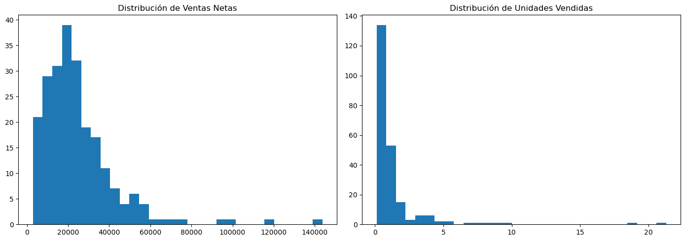

3. Análisis Exploratorio de Ventas#
3.1 Carga de las tablas agregadas para análisis#
from pathlib import Path
import pandas as pd
import numpy as np
import matplotlib.pyplot as plt
pd.set_option("display.float_format", lambda x: f"{x:,.3f}")
def find_project_root(start: Path, marker: str = "data", max_up: int = 6) -> Path:
p = start.resolve()
for _ in range(max_up):
if (p / marker).exists():
return p
p = p.parent
return start.resolve()
ROOT = find_project_root(Path.cwd())
DATA_PROCESSED = ROOT / "data" / "processed"
ts_path = DATA_PROCESSED / "ts_ventas_dia_tienda_producto.csv"
assert ts_path.exists(), "No encuentro la tabla agregada."
df_ts = pd.read_csv(ts_path, parse_dates=["FECHA"])
df_ts.head()
| FECHA | CENTRO | PLU_SAP | VENTA_BRUTA | DESCUENTO | VENTA_NETA | UNIDADES | PROMO_LINES | LINES | PRECIO_UNIT_MED | DESC_PCT_MED | PROMO_RATE | DESCUENTO_PCT_APROX | PROMO_FLAG_AGG | PRECIO_MEDIO_NETO_APROX | |
|---|---|---|---|---|---|---|---|---|---|---|---|---|---|---|---|
| 0 | 2026-01-01 | 1 | 3 | 36900 | 0.000 | 36,900.000 | 2.061 | 0 | 1 | 17,903.930 | 0.000 | 0.000 | 0.000 | 0 | 17,903.930 |
| 1 | 2026-01-01 | 1 | 5 | 143700 | 0.000 | 143,700.000 | 21.285 | 0 | 3 | 6,751.233 | 0.000 | 0.000 | 0.000 | 0 | 6,751.233 |
| 2 | 2026-01-01 | 1 | 7 | 60900 | 0.000 | 60,900.000 | 1.968 | 0 | 2 | 30,945.122 | 0.000 | 0.000 | 0.000 | 0 | 30,945.122 |
| 3 | 2026-01-01 | 1 | 9 | 17750 | 0.000 | 17,750.000 | 0.771 | 0 | 1 | 23,022.049 | 0.000 | 0.000 | 0.000 | 0 | 23,022.049 |
| 4 | 2026-01-01 | 1 | 11 | 24300 | 0.000 | 24,300.000 | 0.804 | 0 | 2 | 30,223.881 | 0.000 | 0.000 | 0.000 | 0 | 30,223.881 |
Interpretación de la Tabla Agregada – Nivel Día–Tienda–Producto#
La tabla anterior corresponde a la estructura final construida para el análisis exploratorio y modelado predictivo.
Cada fila representa la agregación de ventas a nivel Día – Tienda – Producto (PLU_SAP), lo cual constituye la granularidad recomendada para modelos de forecasting en retail.
Estructura y significado de las variables#
FECHA: Fecha calendario de la venta.
CENTRO: Identificador de tienda.
PLU_SAP: Código único de producto.
VENTA_BRUTA: Valor total facturado antes de descuentos.
DESCUENTO: Monto total descontado en ese producto ese día.
VENTA_NETA: Ingreso efectivo generado (VENTA_BRUTA − DESCUENTO).
UNIDADES: Cantidad total vendida (incluye ventas por peso).
PROMO_LINES: Número de líneas con promoción.
LINES: Número total de líneas transaccionales agregadas.
PROMO_RATE: Proporción de líneas vendidas bajo promoción.
DESCUENTO_PCT_APROX: Porcentaje aproximado de descuento aplicado.
PRECIO_MEDIO_NETO_APROX: Precio promedio neto por unidad.
PROMO_FLAG_AGG: Indicador binario de si el producto estuvo en promoción ese día.
Observaciones Técnicas Relevantes#
Coherencia en las métricas monetarias
Se observa consistencia entre VENTA_BRUTA, DESCUENTO y VENTA_NETA. No se evidencian valores negativos ni descuentos superiores a la venta bruta en esta muestra.Presencia de unidades fraccionarias
Las cantidades vendidas presentan valores decimales (ej. 2.061, 0.804), lo cual es típico en categorías por peso (cárnicos, frutas, etc.).
Esto confirma que el modelo deberá tratar correctamente ventas continuas y no solo conteos enteros.Construcción de variables estratégicas
La inclusión de variables como:PROMO_RATE
DESCUENTO_PCT_APROX
PRECIO_MEDIO_NETO_APROX
permite capturar efectos comerciales fundamentales para modelado predictivo avanzado.
Estructura compatible con modelos secuenciales
La tabla está preparada para incorporar:Lags temporales
Ventanas móviles
Variables de tendencia y estacionalidad
Esto es especialmente relevante para modelos como LSTM o arquitecturas temporales más sofisticadas.
Implicaciones Estratégicas#
Esta estructura permite:
Modelar ventas a nivel operativo real.
Evaluar impacto de promociones en ingresos.
Analizar elasticidad precio–ventas.
Identificar productos de alta variabilidad.
Detectar patrones específicos por tienda.
Además, esta agregación evita el ruido transaccional y convierte el dataset en una base analítica lista para modelado predictivo robusto.
Conclusión Ejecutiva#
La construcción de esta tabla representa un paso clave hacia la implementación de modelos de predicción de ventas.
Desde el punto de vista técnico y estructural, el dataset cumple con los requisitos mínimos para avanzar hacia:
Modelos baseline de forecasting.
Modelos de Machine Learning.
Modelos Deep Learning orientados a series de tiempo.
La siguiente etapa dependerá principalmente de contar con histórico ampliado para capturar patrones temporales de largo plazo.
3.2 Panorama general de ventas (totales y métricas clave)#
summary = {
"Total Ventas Netas": df_ts["VENTA_NETA"].sum(),
"Total Ventas Brutas": df_ts["VENTA_BRUTA"].sum(),
"Total Descuentos": df_ts["DESCUENTO"].sum(),
"Total Unidades": df_ts["UNIDADES"].sum(),
"Número de Productos": df_ts["PLU_SAP"].nunique(),
"Número de Tiendas": df_ts["CENTRO"].nunique(),
"Número de Fechas": df_ts["FECHA"].nunique(),
}
summary
{'Total Ventas Netas': np.float64(5621632.0),
'Total Ventas Brutas': np.int64(5706941),
'Total Descuentos': np.float64(85309.0),
'Total Unidades': np.float64(299.32899999999995),
'Número de Productos': 228,
'Número de Tiendas': 1,
'Número de Fechas': 1}
3.3 Distribución de ventas netas y unidades#
fig, axes = plt.subplots(1, 2, figsize=(14,5))
axes[0].hist(df_ts["VENTA_NETA"], bins=30)
axes[0].set_title("Distribución de Ventas Netas")
axes[1].hist(df_ts["UNIDADES"], bins=30)
axes[1].set_title("Distribución de Unidades Vendidas")
plt.tight_layout()
plt.show()

3.4 Análisis de concentración (Regla 80/20 - Pareto por producto)#
ventas_producto = (
df_ts.groupby("PLU_SAP")["VENTA_NETA"]
.sum()
.sort_values(ascending=False)
.reset_index()
)
ventas_producto["cumsum"] = ventas_producto["VENTA_NETA"].cumsum()
ventas_producto["cumsum_pct"] = ventas_producto["cumsum"] / ventas_producto["VENTA_NETA"].sum()
# ¿Cuántos productos generan 80%?
n_80 = (ventas_producto["cumsum_pct"] <= 0.8).sum()
print(f"Productos que generan el 80% de las ventas: {n_80}")
ventas_producto.head(10)
Productos que generan el 80% de las ventas: 132
| PLU_SAP | VENTA_NETA | cumsum | cumsum_pct | |
|---|---|---|---|---|
| 0 | 5 | 143,700.000 | 143,700.000 | 0.026 |
| 1 | 51 | 119,960.000 | 263,660.000 | 0.047 |
| 2 | 90 | 98,910.000 | 362,570.000 | 0.064 |
| 3 | 139 | 93,100.000 | 455,670.000 | 0.081 |
| 4 | 308 | 77,790.000 | 533,460.000 | 0.095 |
| 5 | 49 | 69,930.000 | 603,390.000 | 0.107 |
| 6 | 304 | 65,980.000 | 669,370.000 | 0.119 |
| 7 | 7 | 60,900.000 | 730,270.000 | 0.130 |
| 8 | 375 | 56,900.000 | 787,170.000 | 0.140 |
| 9 | 137 | 56,400.000 | 843,570.000 | 0.150 |
3.5 Top productos por ventas y por unidades#
top_ventas = (
df_ts.groupby("PLU_SAP")["VENTA_NETA"]
.sum()
.sort_values(ascending=False)
.head(10)
)
top_unidades = (
df_ts.groupby("PLU_SAP")["UNIDADES"]
.sum()
.sort_values(ascending=False)
.head(10)
)
top_ventas, top_unidades
(PLU_SAP
5 143,700.000
51 119,960.000
90 98,910.000
139 93,100.000
308 77,790.000
49 69,930.000
304 65,980.000
7 60,900.000
375 56,900.000
137 56,400.000
Name: VENTA_NETA, dtype: float64,
PLU_SAP
5 21.285
139 18.772
379 9.906
375 8.643
248 8.320
118 7.284
51 6.708
95 5.678
19 5.402
340 4.828
Name: UNIDADES, dtype: float64)
3.6 Variabilidad de ventas (Coeficiente de variación)#
cv_producto = (
df_ts.groupby("PLU_SAP")["VENTA_NETA"]
.agg(["mean", "std"])
)
cv_producto["CV"] = cv_producto["std"] / cv_producto["mean"]
cv_producto = cv_producto.sort_values("CV", ascending=False)
cv_producto.head(10)
| mean | std | CV | |
|---|---|---|---|
| PLU_SAP | |||
| 3 | 36,900.000 | NaN | NaN |
| 5 | 143,700.000 | NaN | NaN |
| 7 | 60,900.000 | NaN | NaN |
| 9 | 17,750.000 | NaN | NaN |
| 11 | 24,300.000 | NaN | NaN |
| 13 | 7,200.000 | NaN | NaN |
| 15 | 17,980.000 | NaN | NaN |
| 17 | 23,700.000 | NaN | NaN |
| 19 | 31,400.000 | NaN | NaN |
| 21 | 31,800.000 | NaN | NaN |
3.7 Análisis por tienda#
ventas_tienda = (
df_ts.groupby("CENTRO")["VENTA_NETA"]
.sum()
.sort_values(ascending=False)
)
ventas_tienda
CENTRO
1 5,621,632.000
Name: VENTA_NETA, dtype: float64
3.8 Análisis de facturas#
# Volvemos al dataset línea si lo necesitas
clean_path = DATA_PROCESSED / "Ventas_1_clean.csv"
df_line = pd.read_csv(clean_path, parse_dates=["FECHA"])
ticket_stats = (
df_line.groupby("FACTURA")
.agg(
total_ticket=("VENTA_NETA", "sum"),
productos_distintos=("PLU_SAP", "nunique"),
total_unidades=("CANTIDAD", "sum")
)
)
ticket_stats.describe()
| total_ticket | productos_distintos | total_unidades | |
|---|---|---|---|
| count | 175.000 | 175.000 | 175.000 |
| mean | 32,123.611 | 1.971 | 1.710 |
| std | 33,404.319 | 1.627 | 2.168 |
| min | 1,200.000 | 1.000 | 0.088 |
| 25% | 9,895.000 | 1.000 | 0.455 |
| 50% | 21,330.000 | 1.000 | 0.959 |
| 75% | 45,225.000 | 2.000 | 2.048 |
| max | 219,620.000 | 11.000 | 16.188 |
3.9 Conclusiones del EDA de ventas#
conclusiones = {
"Venta promedio por producto": df_ts.groupby("PLU_SAP")["VENTA_NETA"].mean().mean(),
"Descuento promedio (%)": df_ts["DESCUENTO"].sum() / df_ts["VENTA_BRUTA"].sum() if df_ts["VENTA_BRUTA"].sum() > 0 else 0,
"Productos que dominan ventas (80%)": int(n_80),
}
conclusiones
{'Venta promedio por producto': np.float64(24656.280701754386),
'Descuento promedio (%)': np.float64(0.01494828840879904),
'Productos que dominan ventas (80%)': 132}